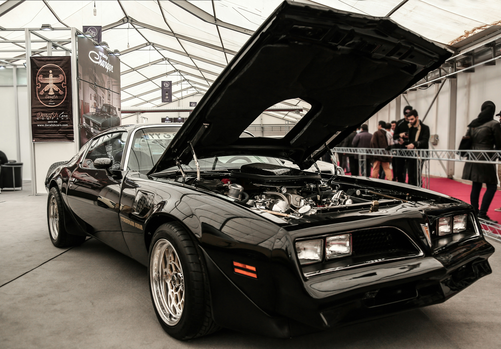

The Pontiac Firebird, an icon of American automotive history, was built by the Pontiac division of General Motors between 1967 and 2002. This was designed as GM's answer to the Ford Mustang and shared the same platform as the Chevrolet Camaro. Over its 35-years in production, it developed a fanbase of car enthusiasts, with for its eye-catching styling and powerful V8 engines.
The second generation, produced from 1970 to 1981, is is when the car really picked up popularity. This period saw the rise of the Trans Am, which featured the famous "Screaming Chicken" decal on the hood. This model is known for being featured in the hit 1977 movie Smokey and the Bandit.
By the 1980s, the third generation introduced a sleeker and sportier look with pop-up headlights, while the fourth and final generation (1993-2002) focused on performance with the LS1 V8 engine. Although production ended in 2002, the Firebird remains a highly sought-after vehicle for car collectors and enthusiasts today.
| Generation | Years Produced | Style Focus |
|---|---|---|
| First Gen | 1967 – 1969 | Classic Chrome & Muscle |
| Second Gen | 1970 – 1981 | Pop Culture & Large Decals |
| Third Gen | 1982 – 1992 | Aerodynamics & Tech |
| Fourth Gen | 1993 – 2002 | Modern Power & Curves |